무료 AI Code Assistant🫢 Part. 1
안녕하세요, PETER입니다.👋
아시는 분들은 이미 아시는 내용일 수 있겠지만, 무료로 Offline AI 코딩 방법에 대해 두 Part에 걸쳐 나눠보려 합니다. Cursor AI나 Copilot과 같은 AI코딩을 사용하기에는 구독료가 부담스러우셨던 분들께도 좋은 소식이길 바랍니다.이제 우리는 코딩을 하기 위해서 비행기 안에서 와이파이 결재를 할 필요도 없고, 인터넷이 안되는 곳에서도 전기⚡️만 있다면 AI와 함께 코딩을 계속할 수 있게 되니 너무 좋은 세상이네요.😭 본론으로 들어가 볼게요!🤟
1. Ollama🦙 사용하기
- Ollama🦙는 무료로 Local PC에서 LLM을 직접 실행할 수 있게 해주는 OpenSource Project입니다.🫰 링크를 따라들어가신 뒤에 자신의 OS에 맞게 Ollama를 설치해주세요.
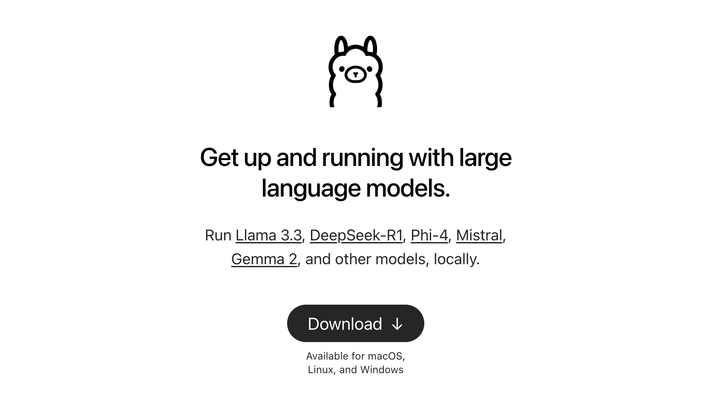 Click Download!
ollama list
설치가 끝나셨다면, Linux나 Mac의 경우 Terminal/Bash 창을 열어주시고 Window는 Powershell을 열어주세요! 그리고 아래와 같이
ollama ls혹은ollama list를 실행해주세요. 현재 Ollama로 실행할 수 있는 모델들을 확인하실 수 있습니다. (저는 이미 설치한 모델들이 많아서 아래와 같고, 여러분들이 보시고 계신 모델리스트는 이와 다를거에요)bash - bash
(base) PETER 🪵 ollama list
NAME ID SIZE MODIFIED
granite3.1-dense:latest 34d3be74ec54 5.0 GB 6 weeks ago
phi4:latest ac896e5b8b34 9.1 GB 6 weeks ago
qwen2.5-coder:7b 2b0496514337 4.7 GB 6 weeks ago
qwen2.5-coder:14b 3028237cc8c5 9.0 GB 6 weeks ago
llama3.2-vision:latest 085a1fdae525 7.9 GB 7 weeks ago
qwen2.5-coder:1.5b 6d3abb8d2d53 986 MB 2 months ago
Qwen2.5-7B-2Q:latest 7075c92e9f5d 3.0 GB 3 months ago
llama2:latest 78e26419b446 3.8 GB 11 months ago
ollama run
이번에는
ollama run명령어를 사용해서 LLM 모델을 다운로드 받고 실행하는 방법을 알아볼게요! 아래와 같이 ollama에서 Models 탭을 클릭해보세요. 이곳에서 당신은 ollama를 통해 다운받을 수 있는 Model을 확인할 수 있습니다. :) 빠른 실습을 위해 조금만 아래로 내리면 찾을 수 있는llama3.2를 클릭해봅니다!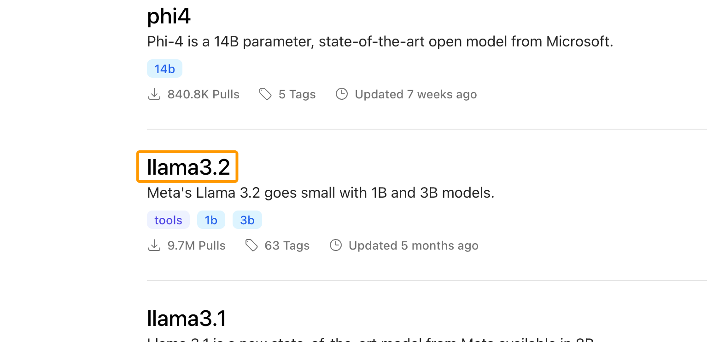 아래와 같이, 좌측 상단의 dropdown을 클릭하면 기본적으로 해당 모델에서 제공되는 버전을 확인할 수 있고, 특정 버전을 클릭하면 우측에 다운받고 실행해볼 수 있는 ollama 명령어를 확인할 수 있어요. 3b를 클릭해봅니다. 그러면 우측 겹쳐진 네모 박스를 클릭해서 복사하셔서 붙여넣으셔도 좋고,
ollama run llama3.2:3b를 터미널에 직접 입력해보세요!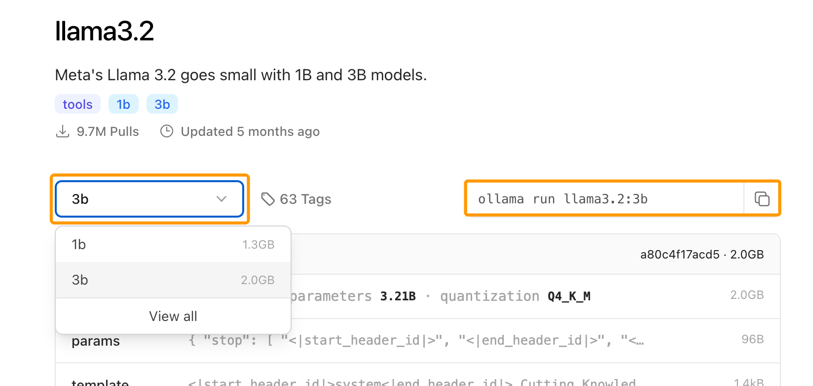 그렇다면 아래와 같이 모델 다운로드가 실행되고.. 대화할 수 있는 창이 실행될 거에요! ‘안녕! 자기소개 부탁해!’ 같은 짧은 대화를 실행해보세요.😉 좀 이상하게 대답을 할 수는 있지만 인터넷이 없는 곳에서도 내 PC에서 LLM과 대화를 할 수 있다는 것을 확인하실 수 있을거에요. :)
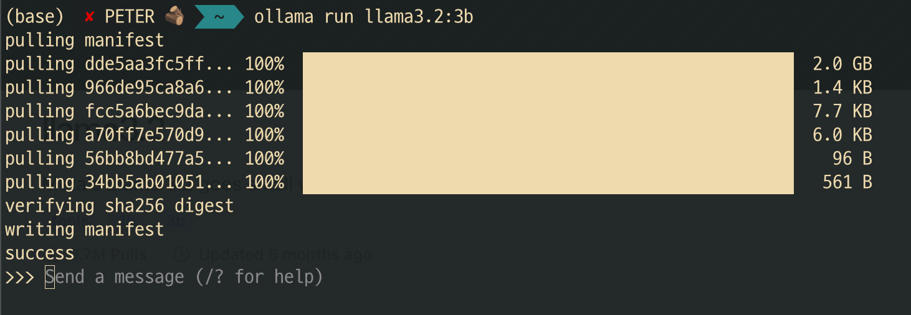 축하합니다! 🥳🍾🎉 이것으로 당신은 Offline LLM 실행에 성공하셨습니다!ㅎㅎ 대화를 그만하고 싶다면
/bye를 입력하시면 됩니다!
ollama rm
ollama의 다운받은 모델을 지우고 싶다면,
ollama rm model_name:tag를 사용하시면 됩니다.🙂 llama3.2로 간단한 실습은 끝났으니 저는 아래 명령어로 모델을 지워버릴게요.😁bash - bash
(base) PETER 🪵 ollama rm llama3.2:3b
deleted 'llama3.2:3b'그 외에 다른 명령어들도 알고 싶으시다면,
ollama라고만 입력해보세요! 더 많은 명령어들을 보실 수 있습니다.😉
2. Continue 설치 & 설정하기
자, 이제 다(?) 왔습니다! Continue라는 Extension만 설치하고, Ollama와 연결만하면 됩니다 :)! Continue는 VSCode Extension 혹은 JetBrains의 Plugin으로 설치할 수 있는데요! ‘continue’라고 검색하셔서 나오는 extension / plugin을 설치해주세요.🤗
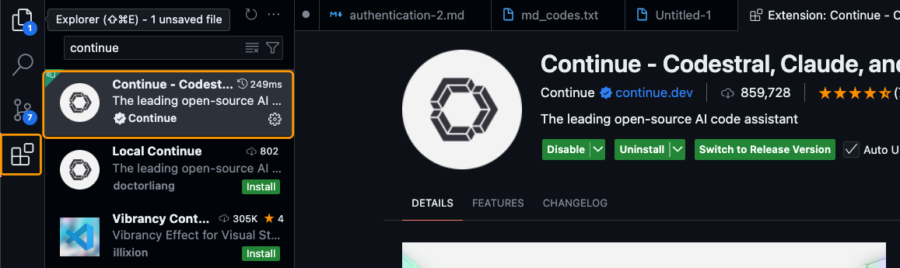 VSCode extension 설치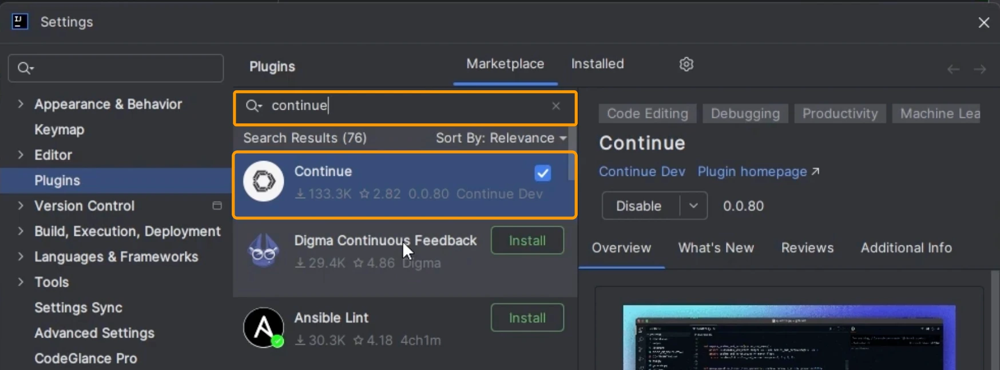JetBrains plugin 설치설치가 끝났다면, 아래 .gif처럼 VSCode의 경우 Activity Bar에 Continue Icon이 생성됐을 거에요. 그걸 Drag & Drop으로 우측으로 이동하면 우측에 고정시킬 수도 있어요! 저도 이렇게 사용 중입니다.
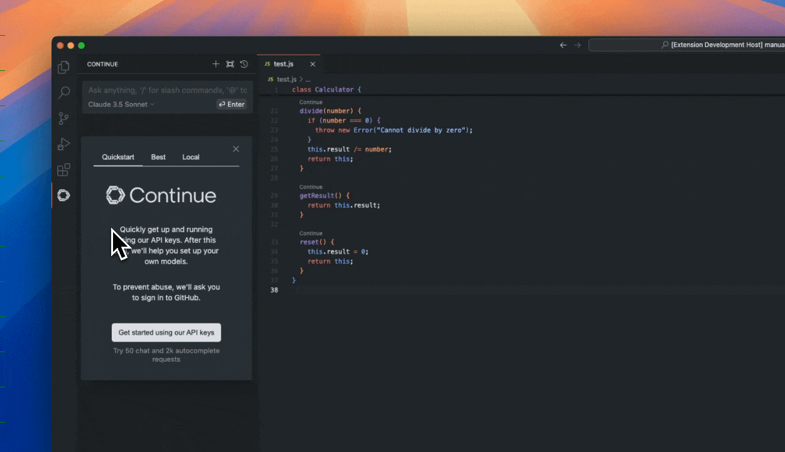
coder llm 다운받기
coding 특화 llm을 다운받아 봅시다! 위에서 했던 방법과 똑같이 Ollama models에 들어가 아래와 같이 qwen2.5-coder:1.5b 모델을 확인하시고 ollama run 명령어로 다운받아 주세요! 물론 PC 사양이 좋으신 분들은 7b나 14b 추천드립니다 :)
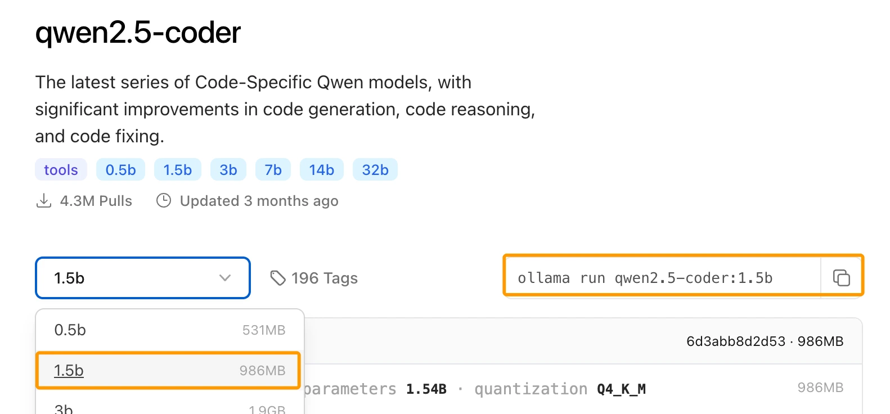
ollama🦙 연결하기
자, 이제 드디어 Ollama와 연결해보겠습니다. 사용하고 계신 IDE에서, Mac이시라면
command + l, Windows라면Ctrl + l을 입력해보세요! 그러면 아래와 같이 채팅 창이 뜰 거에요!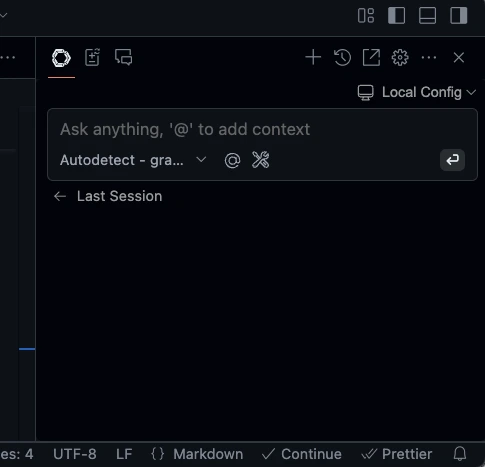 여기서 Dropdown을 내리시고 아래와 같이
+ Add Chat model을 클릭해주세요. Dropdown을 내렸을 때 모습은 캡쳐한 제 내용과 다를 거에요! 저는 이미 연동이 돼있어서 그렇습니다..!😗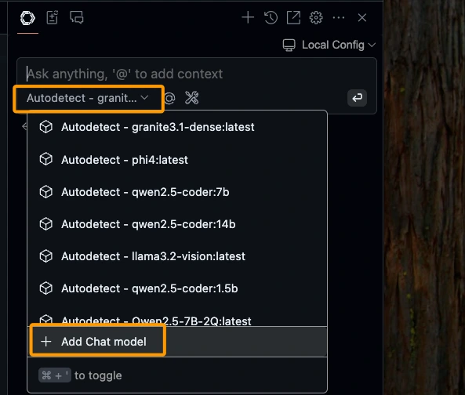 그 다음에는 OpenAI로 선택되어 있는 Provider를 귀여운 Ollama로 바꿔서 클릭해줍니다.
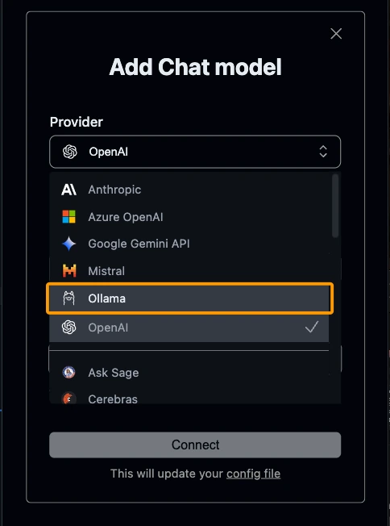 아래 Model 칸은
Autodetect로 설정해주시면 됩니다. Autodetect로 설정이 되어있다면 그대로 두시면 돼요! 그 다음,Connect를 클릭해주세요!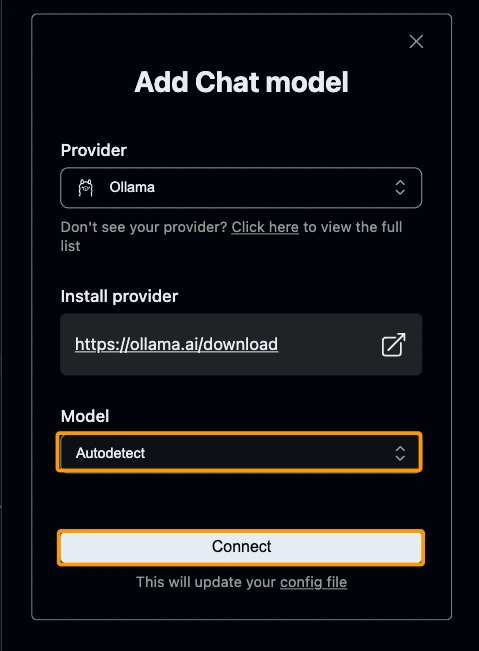 아래와 같이 config.json이 갑자기 나타나면서 provider가 ollama로 설정된 AUTODETECT를 확인하셨다면 제대로 설정이 된 것입니다! config.json은 닫으셔도 됩니다.
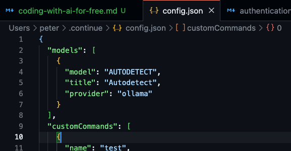 그 다음 다시 채팅창을 열어보시고
Autodetect - qwen2.5-coder:1.5b가 잘 뜨는지 확인해보세요!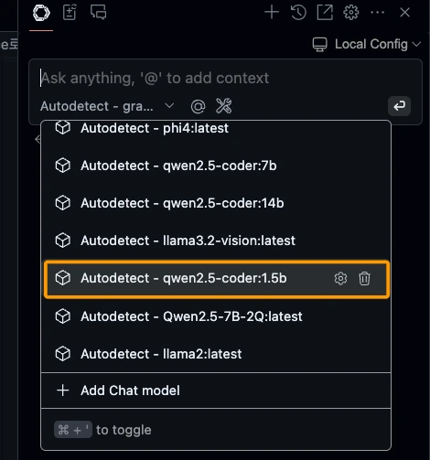 잘 인식이 됐다면, 모델을 클릭하시고, 간단한 명령어를 입력해서 질문을 해보면 잘 되는지 확인을 해볼 수 있습니다!
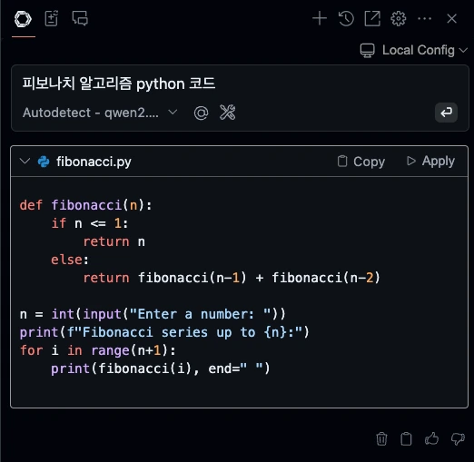
- 여기까지 ollama를 소개하고, Ollama와 continue를 이용해서 로컬에서 LLM을 Offline에서도 Code Assistant로 사용하는 방법에 대해 알아봤습니다! 🤗
- Part. 2에서는 Huggingface에서 모델을 다운받고, Ollama로 커스텀 설정하여 사용하는 방법(약간의 Prompt Engieering 포함)과 무료는 아니지만 Continue에서 아주 가성비 좋은 Code Assistant Provider인 Together.ai를 연동하는 방법에 대해 알아볼게요!😉
- 혹시나 잘못 기입된 내용이 있거나 수정이 필요한 부분은 댓글로 알려주시면 감사하겠습니다!
읽어주셔서 감사합니다!🙇🏻♂️
References